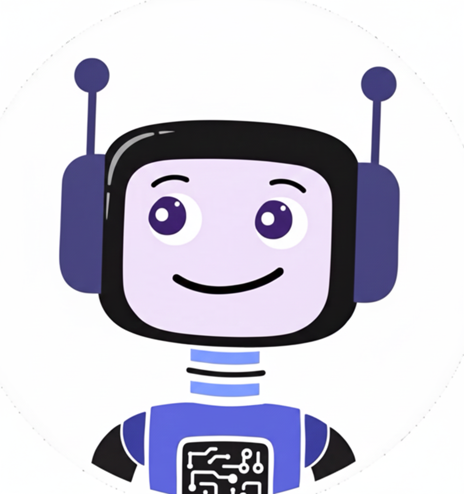

Asistente Virtual con IA
Ecosistema de Chatbot IA Modular diseñado para una integración flexible y reutilizable en cualquier web.
Su núcleo es un motor de IA serverless (Node.js en Vercel) compatible con múltiples proveedores y modelos como Gemini, Llama, DeepSeek y Mistral, con lógica de fallback automático.
Este portfolio (en GitHub Pages) consume la API del motor vía `fetch()`, demostrando una arquitectura full-stack desacoplada y resiliente.
Probalo haciendo clic en el ícono  en la esquina inferior derecha.